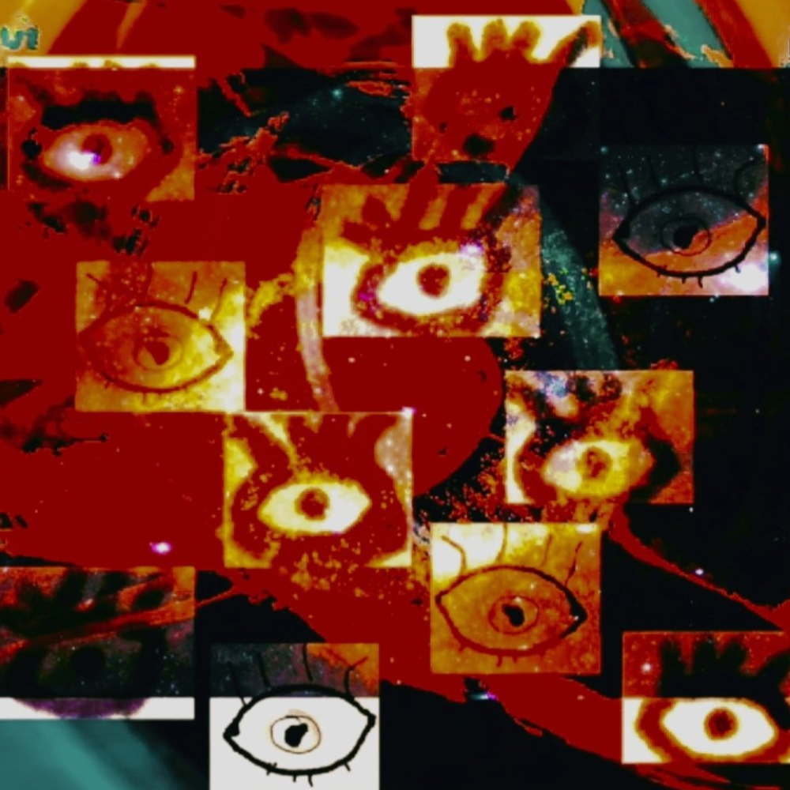

Amie Lewis
 Amie Lewis is one who fashionably wears many hats. Artistically, Amie is a poet who combines words with moving imagery and sounds of music to profoundly translate her personal life experiences and share her in depth emotional feelings and insight. Video poetry is a relatively new form of art, and offers the viewer a visual, auditory and thought-provoking experience simultaneously.Outside of poetry, Amie is the founder of NFT Project 76 and a Web3 marketer. She genuinely believes that by crafting projects and developing marketing strategies that focus on building and supporting the community, instead of on generating a profit, actually return a much larger profit that also includes trust and respect for one another.
"My passion is to create and build. There's nothing that I can think of that's more rewarding than seeing something you work on and pour your heart and soul into develop and evolve. Through kindness, insight, knowledge and an eagerness to learn and further explore, I ignite growth in others and in businesses which inevitably significantly enhances my personal growth."
"I want to change how human worth is measured. People should never be valued based upon their monetary status. Kindness is the way, and it costs nothing to be kind."